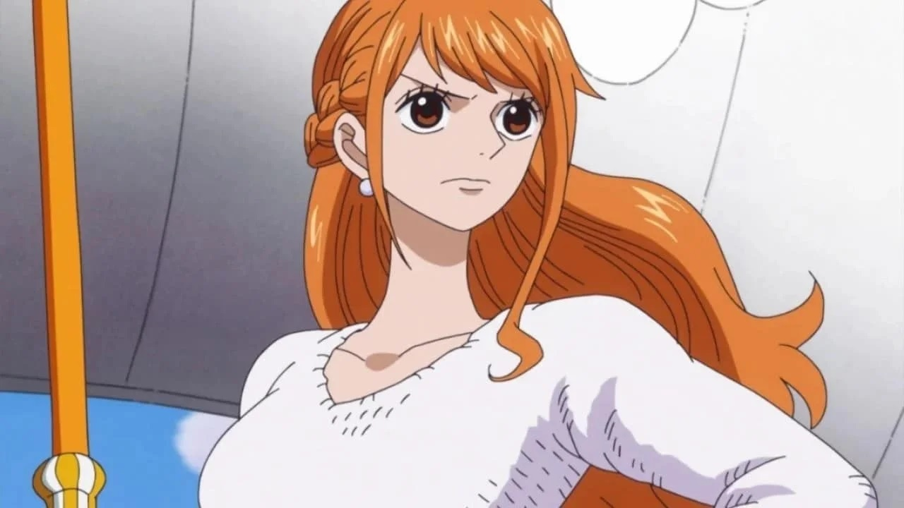
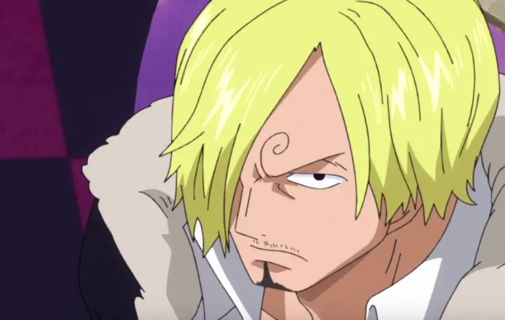
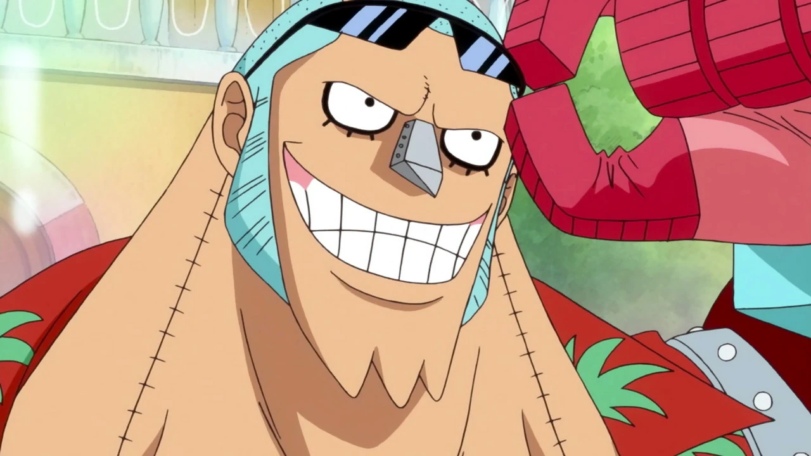
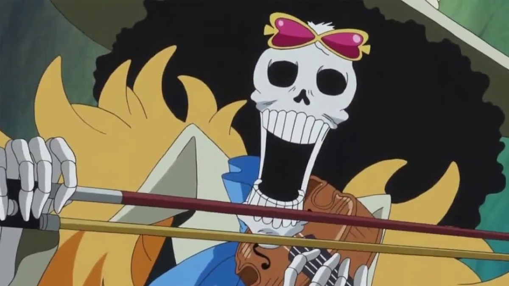
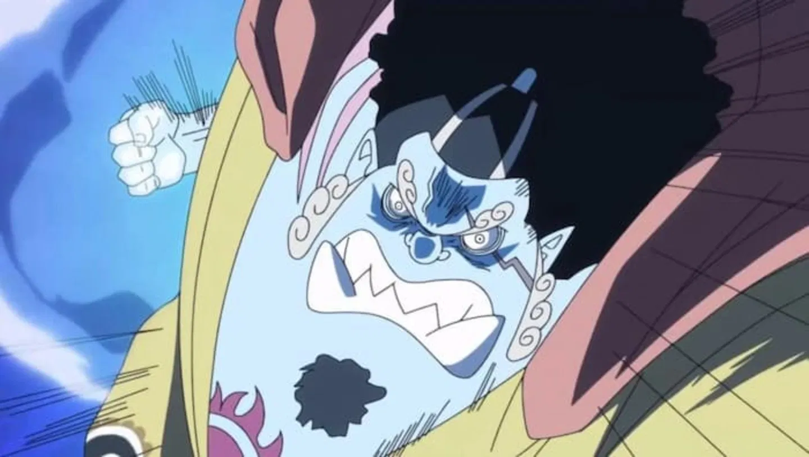

Você sabe quem são os Chápeus de Palha?
One Piece é um mangá de aventura pirata escrito e desenhado por Eiichiro Oda.
A obra é conhecida por empregar temas coloridos e criativos que são retirados da mitologia clássica,
da política e de aspectos musicais. Também é misturada com a tradição pirata e a fórmula shonen.
Lançado em julho de 1997, One Piece já publicou 1110 capítulos (reunidos em 109 volumes tankōbon) e gerou uma enorme franquia,
incluindo uma adaptação para anime da Toei Animation,
muitos filmes e inúmeras outras peças de mercadoria. Desde o final dos anos 2000, é reconhecido como o mangá mais popular do Japão,
sendo até mesmo creditado pelo Guinness World Records como a história em quadrinhos de um único autor mais vendida do mundo.
Quais são os membros da tripulação de Luffy?
No início do mangá, Luffy alegou que ele queria pelo menos dez pessoas para se juntar a sua tripulação antes de entrar na Grand Line (sem contar-se).Isso foi mudado depois que Usopp disse a Luffy que depois
que "o cozinheiro" se juntou a eles, eles resgatariam Nami e iriam para a Grand Line.
Embora isso é muito além da data atual, ainda pode servir como prova de que haverá pelo menos dez
Chapéus de Palha em um ponto do mangá (excluindo Luffy). Luffy também alegou no início do mangá,
que ele iria reunir uma equipe forte o suficiente para superar o seu herói de infância Shanks o ruivo.
Os atuais tripulantes são:
- Monkey D. Luffy, como capitão.
- Roronoa Zoro, como espadachim do bando.
- Nami, como a navegadora.
- Ussop, como o atirador.
- Vinsmoke Sanji, como Cozinheiro.
- Tony Tony Chopper, como Médico.
- Nico Robin, como Arqueóloga.
- Franky, como o Carpinteiro/Construtor.
- Brook, como Músico.
- Jinbe, como o Timoneiro.
Agora que vc está familiarizado com One Piece, vamos falar sobre cada integrante da tripulção dos Chápeus de Palha. Iremos coversar
sobre a história, e algumas características de cada personagem. Let's go!
Monkey D. Luffy

Monkey D. Luffy nasceu na Ilha do Sabo, no East Blue, e é o filho do revolucionário Monkey D. Dragon e neto do lendário herói dos mares, Monkey D. Garp. Desde jovem, Luffy sonha em se tornar o Rei dos Piratas, inspirado por seu ídolo e amigo de infância, o pirata Shanks. Ele comeu a Fruta do Diabo "Gomu Gomu no Mi" (atualmente conhecida como "Hito Hito no Mi, Modelo: Nika"), que lhe dá um corpo de borracha e habilidades elásticas.
Luffy começa sua jornada aos 17 anos, formando sua própria tripulação, Piratas dos Chapéus de Palha, em busca do lendário tesouro One Piece para se tornar o Rei dos Piratas. Ao longo do caminho, ele recruta diversos membros com habilidades únicas, como Zoro, Nami, Usopp, Sanji, Tony Tony Chopper, Nico Robin, Franky, Brook e Jinbe.
Roronoa Zoro

Quando Luffy o encontrou, preso em uma base naval na Shells Town, o futuro Rei dos Piratas, sempre sorridente, imediatamente gostou do espadachim durão. Embora tenha sido teimoso no início, Zoro eventualmente se junta à nova tripulação de Luffy e se dedica ainda mais aos seus sonhos. Após sair derrotado em um confronto contra Dracule Mihawk, o homem amplamente reconhecido como o ápice da espada no mundo de One Piece, Zoro jura nunca mais perder. Esse juramento, construído em cima da promessa anterior a Kuina (Ex colega e rival), transformou Zoro em um guerreiro de força inimaginável e vontade inabalável. Ele não pode decepcionar a si mesmo nem a Kuina.
Nami

Nami nasceu em uma pequena vila chamada Kokoyashi, que foi destruída por piratas quando ela era ainda muito jovem. Ela e sua irmã adotiva, Nojiko, foram resgatadas por uma mulher chamada Bellemere, que as criou como suas próprias filhas. Nami demonstrou desde cedo um grande talento para a navegação e cartografia.
A tragédia na vida de Nami ocorreu quando a vila foi atacada por Arlong, um poderoso peixe-homem pirata. Arlong tomou controle da vila e forçou Nami a trabalhar para ele, coletando uma quantia enorme de dinheiro como "tributo" para libertar sua vila. Ela se tornou uma habilidosa navegadora sob o domínio de Arlong, mas a um custo pessoal enorme, já que ela trabalhou incansavelmente para pagar a dívida e garantir a segurança de sua vila.
Eventualmente, Nami se une aos Piratas do Chapéu de Palha, liderados por Monkey D. Luffy, depois que Luffy a ajuda a derrotar Arlong e libertar sua vila. Nami se torna uma parte essencial da tripulação, contribuindo com suas habilidades de navegação e conhecimentos cartográficos.
Usopp

Usopp é o filho de Yasopp e Banchina. Ele nasceu e foi criado na Vila Syrup, e era o "capitão" dos Piratas Usopp e o amigo mais próximo de Kaya. Após colaborar com os Chapéus de Palha para derrotar Kuro e os Piratas do Gato Preto, ele foi convidado a se juntar à tripulação. Apesar de sua covardia normal, Usopp sonha em se tornar um corajoso guerreiro do mar como seu pai, e vive todos os dias em busca de viver à altura deste sonho.
Vinsmoke Sanji

Sanji fugiu de casa e se tornou um jovem cozinheiro. Durante sua viagem, ele acabou se encontrando com Zeff, um lendário cozinheiro e ex-pirata que também estava em busca de seu próprio sonho. Juntos, eles ficaram presos em uma ilha deserta, onde Zeff salvou Sanji, sacrificando a própria perna para que eles pudessem sobreviver. Sanji foi profundamente impactado por esse ato de coragem e bondade e prometeu seguir o legado de Zeff, que era encontrar o "All Blue", uma lendária região do oceano onde todos os peixes do mundo se encontram e onde ele poderia cozinhar para os melhores chefes do mundo.
Após o resgate de Zeff, Sanji se tornou o chef do Baratie, um restaurante flutuante. Quando os Piratas do Chapéu de Palha chegam ao Baratie, Sanji inicialmente reluta em se juntar a eles, mas acaba se unindo à tripulação depois que Luffy e seus amigos o ajudam a derrotar Don Krieg e seus piratas. Sanji se junta à tripulação com o objetivo de encontrar o All Blue e realizar seu sonho de se tornar um grande chef.
Tony Tony Chopper

Chopper nasceu em uma pequena ilha no Mar do Norte, onde era um cervo comum. Após comer a Hito Hito no Mi, começou a ter características humanas, o que o fez ser rejeitado pelos outros cervos. Desesperado, ele se isolou e acabou sendo encontrado por uma médica chamada Hiriluk, que lhe deu esperança e o ensinou sobre a importância da medicina. Hiriluk morreu pouco depois, mas antes de falecer, pediu a Chopper que continuasse a lutar pela vida dos outros.
Chopper se juntou à tripulação dos Chapéus de Palha liderada por Monkey D. Luffy, após Luffy e sua equipe ajudarem a salvar a ilha de uma ameaça. Chopper se tornou o médico da tripulação e usa suas habilidades para curar e ajudar seus companheiros de viagem.
Nico Robin

Durante o arco de Alabasta, Robin é confrontada pelos Piratas do Chapéu de Palha, que a ajudam a derrotar Crocodile e seu plano maligno. Ela decide se unir à tripulação dos Piratas do Chapéu de Palha depois de reconhecer a bondade e a determinação de seus membros, especialmente Luffy. Robin se torna a arqueóloga da tripulação e se compromete a ajudar Luffy e seus amigos a encontrar o One Piece e revelar a verdade por trás do Século Vazio.
Robin enfrenta vários desafios ao longo da série, incluindo a perseguição contínua pelo governo mundial e suas próprias questões pessoais relacionadas ao seu passado. Ela lida com o trauma da destruição de Ohara e a necessidade de proteger o que resta de seu legado. Sua jornada com os Piratas do Chapéu de Palha a ajuda a encontrar um novo propósito e a lidar com seus medos.
Franky

Franky nasceu como Cutty Flam na cidade de Water 7. Ele cresceu em uma família pobre e se tornou um jovem talentoso em engenharia e construção. Desde cedo, Franky mostrou uma habilidade notável para a construção e modificação de veículos e armas. Ele também tinha um sonho de construir um grande navio e viajar pelo mundo.
Franky se tornou aprendiz de Tom, um lendário carpinteiro que construiu o navio Oro Jackson, o navio dos Piratas do Roger. Tom era uma figura paterna para Franky e o ensinou tudo o que sabia sobre carpintaria e construção naval. Após a execução de Tom, Franky assumiu a identidade de "Franky" e continuou o legado de seu mentor.
Na sua fase adulta, Franky se tornou um notório construtor e engenheiro em Water 7. Ele liderou um grupo de "Franky Family" e construiu o navio "Sea Train" para transporte em Water 7. No entanto, seu trabalho o colocou em conflito com os Piratas do Chapéu de Palha quando ele sequestrou Nico Robin e se envolveu em um plano para assassinar o atual prefeito de Water 7, Iceburg, em um esforço para vingar a morte de Tom.
Brook

Brook nasceu no West Blue e foi membro da tripulação dos Piratas Rumbar, um grupo pirata conhecido por suas habilidades musicais. Ele era o músico da tripulação e tinha uma grande paixão pela música. Durante suas aventuras, Brook se tornou muito próximo de seus companheiros de tripulação e compartilhou com eles muitos momentos alegres e desafiadores.
Durante uma de suas viagens, a tripulação dos Piratas Rumbar encontrou o "Barrel" (o labirinto subaquático onde se esconde o "One Piece"), um lugar perigoso onde a tripulação ficou presa. Durante a luta para escapar, eles foram atacados por uma terrível neblina que causou uma epidemia de doença. Como Brook era o único membro da tripulação que possuía uma Fruta do Diabo, ele foi o único a sobreviver após a epidemia.
Devido ao efeito da Fruta do Diabo que consumiu (a "Yomi Yomi no Mi", ou "Fruta da Ressurreição"), Brook teve a capacidade de voltar à vida após a morte, mas como um esqueleto. Após a morte de sua tripulação, Brook passou décadas vagando sozinho no Navio Fantasma, o "Thriller Bark", e se tornou um espírito vagante, incapaz de deixar o navio devido ao poder da Fruta do Diabo.
Brook encontrou os Piratas do Chapéu de Palha quando eles chegaram ao Thriller Bark. Inicialmente, ele estava sendo manipulado pelo Shichibukai Gecko Moria, mas, após a ajuda de Luffy e sua tripulação, Brook foi libertado e se uniu aos Piratas do Chapéu de Palha. Sua principal motivação para se juntar à tripulação foi o desejo de cumprir a promessa feita a seus antigos companheiros de tripulação e encontrar seu antigo amigo, Laboon, uma baleia com a qual ele havia feito um vínculo especial.
Jinbe

Jinbe nasceu como um peixe-homem e é membro da raça dos homens-peixe. Ele é conhecido por sua força e habilidades no estilo de combate "Fish-Man Karate".Foi um dos líderes da tribo dos homens-peixe, e teve uma vida de luta e lealdade, começando como um dos Shichibukai, os piratas que foram aliados do governo mundial.
Se tornou um dos aliados de Barba Branca e desempenhou um papel significativo durante a Guerra dos Maiorais, ajudando a enfrentar o governo mundial e protegendo seus amigos e aliados. Após a queda de Barba Branca, Jinbe se envolveu em um conflito com Big Mom, uma das Yonkou, quando tentou proteger seus amigos e seu povo. Ele acabou se separando temporariamente dos Piratas do Chapéu de Palha para resolver seus próprios problemas com ela e ajudar sua própria nação.
Eventualmente se juntou aos Piratas do Chapéu de Palha após a resolução de seus conflitos e suas responsabilidades. Ele se tornou o timoneiro da tripulação, trazendo suas habilidades de combate e experiência para ajudar Luffy e seus amigos.
E esses foram todos os integrantes do Chapéu de Palha, que somados (contando com o capitão) totalizam 10 integrantes.
Os fans suspeitam que entrará um novo novembro, mas não é nada confirmado. Até a proxima!